Paisagens Campo limpo
Formação campestre · 1 de 11
Campo limpo
Um mar de capim e ervas, com raríssimos arbustos e nenhuma árvore. Aparece nas encostas, nas chapadas e em volta das veredas e das nascentes.8
- Cobertura
- quase nenhuma árvore
- Altura
- capim e ervas
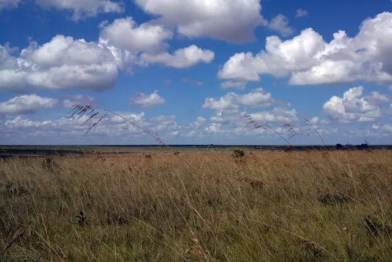
Como reconhecer
Dá para ver o horizonte em todas as direções. Na seca, fica dourado; logo depois das primeiras chuvas, verde.
Por que importa
É onde vivem as aves e os bichos de campo aberto, como a ema, o veado-campeiro e a coruja-buraqueira, e costuma cercar as nascentes e as veredas. Por ser fácil de transformar em pasto, é uma das paisagens que mais somem.
Onde ver
Espécies desta paisagem
19 espécies do catálogo aparecem nesta paisagem. Ver com os filtros
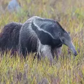
Mamíferos
Tamanduá-bandeira
Myrmecophaga tridactyla
Não tem dentes: come formigas e cupins com uma língua de mais de meio metro.15
Onde: campo limpo, campo sujo, cerrado
Vulnerável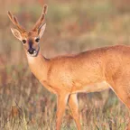
Mamíferos
Veado-campeiro
Ozotoceros bezoarticus
O veado dos campos abertos. O Parque Nacional das Emas é um dos lugares onde ele ainda é visto em bandos.1516
Onde: campo limpo, campo sujo
VulnerávelFoto: Nortondefeis, CC BY-SA 4.0
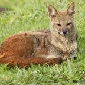
Mamíferos
Raposa-do-campo
Lycalopex vetulus
O único canídeo que só existe no Cerrado. Pequena, come muitos cupins e insetos.17
Onde: campo limpo, campo sujo, cerrado
VulnerávelFoto: Steven Whitebread, CC BY 4.0
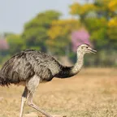
Aves
Ema
Rhea americana
A maior ave do Brasil. Não voa, corre muito, e quem choca os ovos é o macho.
Onde: campo limpo, campo sujo
Foto: Giles Laurent, CC BY-SA 4.0
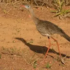
Aves
Seriema
Cariama cristata
O canto alto, que parece uma risada, é um dos sons mais típicos das manhãs do Cerrado.
Onde: campo limpo, campo sujo, cerrado
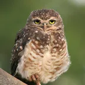
Aves
Coruja-buraqueira
Athene cunicularia
Mora em tocas no chão e fica de pé na entrada, de dia, vigiando o campo.
Onde: campo limpo, campo sujo
Foto: Wagner Machado Carlos Lemes from Goiânia, Brazil, CC BY 2.0
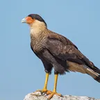
Aves
Carcará
Caracara plancus
Come de tudo e aparece onde tem comida fácil, até atrás de tratores e na beira das queimadas.
Onde: campo limpo, campo sujo, cerrado
Foto: Andreas Trepte, CC BY-SA 4.0
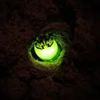
Insetos
Vaga-lume dos cupinzeiros
Pyrearinus termitilluminans
Nas primeiras noites de chuva, as larvas acendem luzes verdes nos cupinzeiros para atrair insetos. As Emas são famosas pelos cupinzeiros que brilham.
Onde: campo limpo, campo sujo
Foto: Nortondefeis, CC BY-SA 4.0
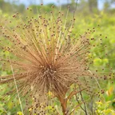
Ervas e arbustos
Capim-dourado
Syngonanthus nitens
A haste dourada vira o artesanato mais conhecido do Jalapão, no Tocantins.
Onde: campo limpo, vereda
Foto: Daniel.zilenovski, CC BY-SA 3.0
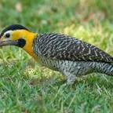
Aves
Pica-pau-do-campo
Colaptes campestris
Um pica-pau que procura formigas e cupins no chão, em vez de bicar troncos.
Onde: campo limpo, campo sujo
Foto: Giles Laurent, CC BY-SA 4.0
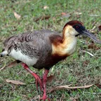
Aves
Curicaca
Theristicus caudatus
Bico longo e curvo para tirar insetos do chão; o grito alto, em dupla, se ouve de longe.
Onde: campo limpo, campo sujo
Foto: Charles J. Sharp, CC BY-SA 4.0
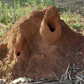
Insetos
Cupim de montículo
Cornitermes cumulans
Constrói os cupinzeiros duros dos campos, que viram casa de corujas, lagartos e vaga-lumes.
Onde: campo limpo, campo sujo
Foto: Antonia Faleiros, CC BY-SA 4.0
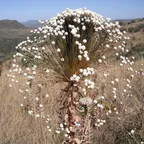
Ervas e arbustos
Chuveirinho
Paepalanthus spp.
Sempre-viva de flores brancas que se abrem como a ducha de um chuveiro.
Onde: campo rupestre, campo limpo
Foto: Riccardo Rocca, CC BY 4.0
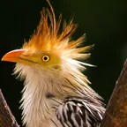
Aves
Anu-branco
Guira guira
Ave clara e despenteada, de topete laranja, que vive em grupos e divide o ninho entre várias fêmeas.
Onde: campo sujo, campo limpo, parque de cerrado
Foto: Levi Adriano Dias, CC BY-SA 4.0
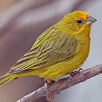
Aves
Canário-da-terra
Sicalis flaveola
O macho é amarelo-ouro, de testa laranja. Dos pássaros mais tirados da natureza pelo tráfico.
Onde: campo sujo, campo limpo, cerrado
Foto: Charles J. Sharp, CC BY-SA 4.0
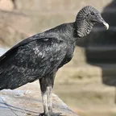
Aves
Urubu-de-cabeça-preta
Coragyps atratus
O urubu comum, todo preto, que vive em bandos e limpa carcaças, inclusive perto das cidades.
Onde: campo limpo, campo sujo, cerrado
Foto: Cayambe, CC BY-SA 3.0
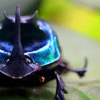
Insetos
Rola-bosta
Scarabaeinae
Besouros que fazem bolas de esterco e as enterram: limpam o chão e adubam o solo.
Onde: campo limpo, campo sujo, cerradão
Foto: Lucas Henrique Gomes de Almeida, CC BY-SA 4.0
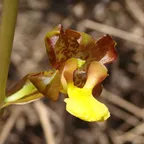
Ervas e arbustos
Sumaré
Cyrtopodium spp.
Orquídea de chão, de flores amarelas pintadas, que floresce em massa depois das queimadas.
Onde: campo sujo, campo limpo, cerrado
Foto: João Medeiros, CC BY 2.0
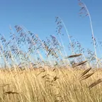
Ervas e arbustos
Capim-flecha
Tristachya leiostachya
Capim alto dos campos das Emas, que rebrota depressa depois do fogo e domina onde cresce.
Onde: campo limpo, campo sujo
Foto: Mario Barroso, CC BY 4.0